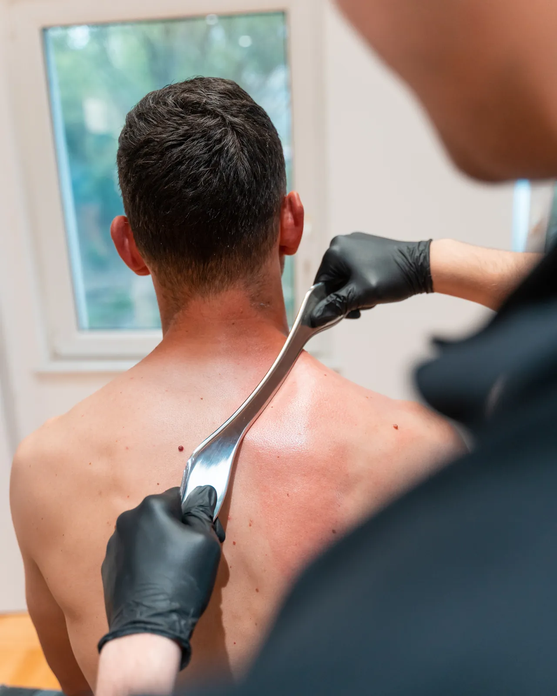
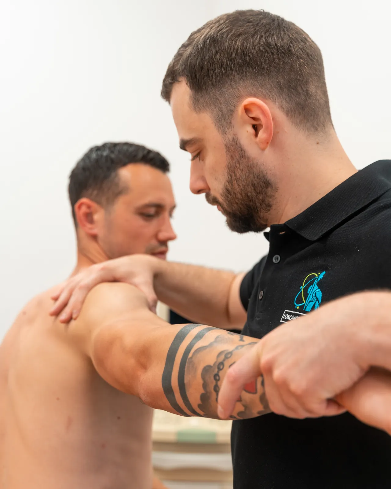

Osteopatija
Manualne tehnike koje preciznom palpacijom traže blokade, mehaničke i one koje ometaju dotok krvi u tkivo. Pristup je holistički: telo se posmatra kao celina, pa se tretira uzrok, ne mesto na koje pacijent pokaže.
USLUGA 04 · RUKE KOJE ZNAJU ZAŠTO
Ciljane tehnike na zglobu i mekom tkivu, u skladu sa nalazom. Ne tamo gde boli, nego gde je uzrok.

■ ŠTA JE OVO
Ruka oseti ono što se aparatom ne meri: gde zglob staje pre kraja pokreta, koji mišić ne radi svoj deo posla i koje tkivo je zalepljeno posle stare povrede.
Zato manualna terapija ne kreće od mesta koje boli. Prvo se testira šta pokreće šta, pa se radi tamo gde test pokaže, čak i kad je to sasvim drugi deo tela.
Sama za sebe daje kratko olakšanje. Ono što ruka otvori, vežba mora da zadrži, zato ide uz ostatak plana, ne umesto njega.
Ukočenost i zategnutost koja sama ne popušta.
Manualna terapija retko ide sama. Ono što ruka otvori, vežba mora da zadrži, zato je najčešće deo plana, a ne ceo plan.

Manualno testiranje mišića i provera obima pokreta po zglobovima. Traži se ono što je isključeno iz šeme pokreta, a ne ono što je najosetljivije.
Osteopatija, NKT, Ergon ili masaža: bira se prema nalazu testa. Najčešće se u jednom tretmanu kombinuju dve.
Mobilizacija zgloba, rad na mekom tkivu i na miofascijalnim vezama. Tempo se drži ispod granice bola. Kroz bol se ne radi.
Otvoren obim pokreta se odmah popunjava aktivacijom, a dalje ide u kineziterapiju. Bez toga se telo za nekoliko dana vraća u stari obrazac.
Manualne tehnike koje preciznom palpacijom traže blokade, mehaničke i one koje ometaju dotok krvi u tkivo. Pristup je holistički: telo se posmatra kao celina, pa se tretira uzrok, ne mesto na koje pacijent pokaže.
Spaja teoriju motorne kontrole sa manualnim testiranjem mišića. Nalazi mišić koji je u datoj šemi pokreta prestao da radi i vraća ga u pokret, pa preopterećeni deo prestaje da nosi tuđi posao.
Statička i dinamička obrada mekog tkiva posebnim alatom, po tačkama miofascijalnog sistema. Radi na pokretljivosti tetiva, elastičnosti ukočenog zgloba i na grčenju mišića.
Švedska za opuštanje, duboka za dublje slojeve mišića i vezivnog tkiva, sportska za pripremu i oporavak, triger point za tačke koje se stvaraju posle povrede ili preopterećenja.
Imena tehnika su za nas. Vama je dovoljno da kažete šta ne možete da uradite a ranije ste mogli.

Razlika u pokretu se često oseti već posle prvog tretmana, ali to je otvoren prostor, ne rešen problem. Ako se u njega ne ubaci vežba, telo se vraća u obrazac koji je i doveo do tegobe. ZA POTVRDU
Ne mora sve da počne ovde.
Ako niste sigurni kuda, počnite od dijagnostike. Pregled i postoji da se usluga ne pogađa.
Cene su preuzete sa lokomoto.rs/cenovnik-2/. Masaže su tamo u grupi „Oporavak i masaža", koja nije vezana ni za jednu uslugu, a ovde su prikazane uz manualnu terapiju jer joj po sadržaju pripadaju. Treba presuditi gde stoje. ZA POTVRDU
Zvuk se ponekad javi pri mobilizaciji zgloba i nije merilo uspeha tretmana. Cilj nije pucanj nego vraćanje pokreta, a tehnika se bira prema nalazu, ne prema efektu.
Radi se ispod granice bola. Kod dubljeg rada na mekom tkivu se oseti pritisak, a sutradan ponekad osetljivost kao posle treninga. Ako u toku tretmana nešto oštro zaboli, kaže se odmah i tehnika se menja.
Da, masaža se zakazuje i zasebno. Ali ako imate bol koji traje, masaža ga neće rešiti. Tada je bolji izbor pregled, pa tretman prema nalazu.
Ne. Radimo privatno, bez ugovora sa RFZO. Uz račun koji dobijate od nas možete tražiti refundaciju od privatnog osiguranja.